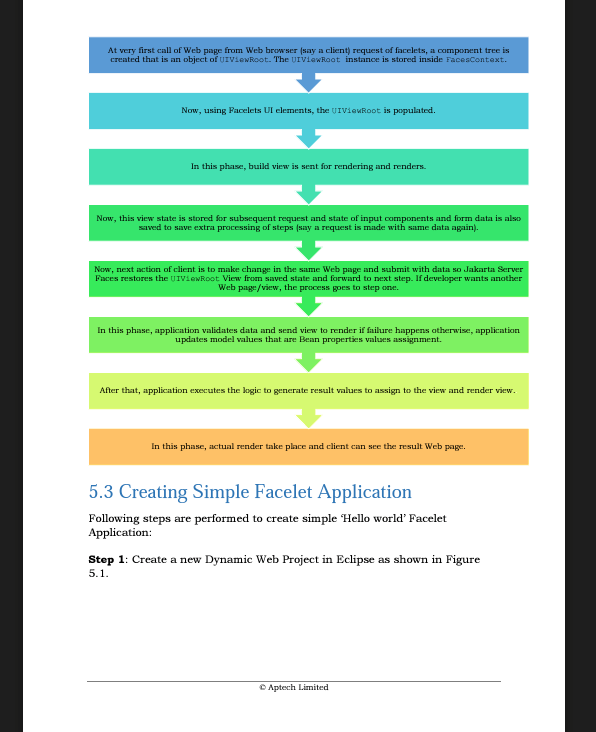

<title>Connectors & JDBC</title>
<meta name="description" content="JCA connects app servers to any external system; JDBC is the standard way Java talks to relational databases.">
<link rel="stylesheet" href="assets/css/styles.css">
<script>window.PAGE = "12-connectors-jdbc";</script>

<main class="page">

  <h1>Unit 12 · Connectors (JCA) &amp; JDBC</h1>
  <p class="lede">Enterprise apps rarely stand alone — they talk to databases, mainframes, ERP systems,
    message brokers. <strong>JCA</strong> is the standard socket for plugging any such system into an
    app server. <strong>JDBC</strong> is the specific, older API for relational databases.</p>

  <div class="callout"><span class="callout__i">↩︎</span>
    <div class="callout__b"><b>Recap</b> Unit 05: a DataSource (from a connection pool) is how a bean
      gets a DB connection. JDBC is what you do with that connection.</div>
  </div>

  <span class="eyebrow">concept</span>
  <h2>The M × N problem JCA solves</h2>
  <p>If <em>M</em> app servers each need custom code to talk to <em>N</em> external systems, that’s
    <em>M × N</em> brittle connectors to build and maintain. JCA flips it: each system vendor ships
    <strong>one</strong> standard <strong>Resource Adapter</strong> (a <code>.rar</code> file). Any
    certified app server loads it and instantly gets pooled, transactional, secure connectivity — so
    it’s <em>M + N</em>.</p>
  <figure>
    
    <figcaption><b>Takeaway:</b> one resource adapter per external system, reusable across every
      Jakarta EE server. Vendor lock-in avoided.</figcaption>
  </figure>

  <h3>The system-level contracts (SPI)</h3>
  <div class="tablewrap"><table>
    <thead><tr><th>Contract</th><th>What it gives you</th></tr></thead>
    <tbody>
      <tr><td>Connection management</td><td>The server pools connections to the external system transparently.</td></tr>
      <tr><td>Transaction management</td><td>The external system joins the server’s transaction (a single transaction can span PostgreSQL <em>and</em> SAP — 2-phase commit / XA).</td></tr>
      <tr><td>Security management</td><td>Caller identity and credentials are propagated to the external system.</td></tr>
      <tr><td>Work management</td><td>The adapter borrows threads from the server’s managed pool instead of spawning its own.</td></tr>
    </tbody>
  </table></div>

  <h3>Direction of communication</h3>
  <div class="tablewrap"><table>
    <thead><tr><th>Model</th><th>Direction</th><th>Started by</th></tr></thead>
    <tbody>
      <tr><td>Outbound</td><td>App → external system (call a service, update data)</td><td>Your bean</td></tr>
      <tr><td>Inbound</td><td>External system → app (an event fires an MDB)</td><td>The external system</td></tr>
      <tr><td>Bidirectional</td><td>Both</td><td>Either side</td></tr>
    </tbody>
  </table></div>

  <span class="eyebrow">concept</span>
  <h2>JDBC — the six steps</h2>
  <ol>
    <li><strong>Get the driver</strong> — JDBC 4+ finds it on the classpath automatically. (Legacy:
      <code>Class.forName("org.postgresql.Driver")</code>.)</li>
    <li><strong>Get a connection</strong> — <code>DriverManager.getConnection(url, user, pass)</code>
      for standalone code; a JNDI <code>DataSource</code> inside an app server (Unit 05).</li>
    <li><strong>Create a statement</strong> — <code>Statement</code> (static SQL — injection risk if
      you concatenate), <code>PreparedStatement</code> (<code>?</code> placeholders — <em>always
      prefer this</em>), <code>CallableStatement</code> (stored procedures).</li>
    <li><strong>Execute</strong> — <code>executeQuery()</code> for SELECT (→ <code>ResultSet</code>),
      <code>executeUpdate()</code> for INSERT/UPDATE/DELETE (→ row count).</li>
    <li><strong>Process the <code>ResultSet</code></strong> — the cursor starts before row 1; loop
      <code>while (rs.next())</code> and read columns (<code>rs.getInt("id")</code>).</li>
    <li><strong>Close</strong> — in reverse order: <code>ResultSet</code> → <code>Statement</code> →
      <code>Connection</code>. <code>try</code>-with-resources does this for you.</li>
  </ol>

  <div class="code-head">A DAO method with PreparedStatement + try-with-resources</div>
  <pre><code>public UserAccount create(UserAccount user) {
    String sql = "INSERT INTO user_accounts (username, email, role) VALUES (?, ?, ?)";
    try (Connection conn = DatabaseConfig.getConnection();
         PreparedStatement ps = conn.prepareStatement(sql, Statement.RETURN_GENERATED_KEYS)) {

        ps.setString(1, user.getUsername());
        ps.setString(2, user.getEmail());
        ps.setString(3, user.getRole());
        ps.executeUpdate();

        try (ResultSet keys = ps.getGeneratedKeys()) {
            if (keys.next()) user.setId(keys.getInt(1));
        }
        return user;
    } catch (SQLException e) {
        throw new RuntimeException(e);
    }
}</code></pre>

  <div class="bench" data-run="jdbc">
    <div class="bench__head"><span class="dot"></span><span class="kind">try it</span><span class="mode">live — a JS twin of the CRUD demo</span></div>
    <pre class="bench__code"><code>// full lifecycle: CREATE TABLE, insert 3, list, update #2, delete #3, list
// (runs an in-memory model that behaves like the real JDBC demo)</code></pre>
    <div class="bench__controls">
      <button class="btn-run" type="button">Run</button>
      <span class="bench__hint">Same output shape as the real H2/MySQL lab.</span>
    </div>
    <pre class="bench__out" aria-live="polite"></pre>
  </div>

  <div class="callout callout--tip"><span class="callout__i">💡</span>
    <div class="callout__b"><b>CCI vs JDBC</b>
      JDBC is for relational databases (SQL, tables, <code>ResultSet</code>). For non-relational
      systems (a mainframe, an ERP) JCA defines the generic <strong>Common Client Interface (CCI)</strong>:
      <code>Interaction.execute(spec, record)</code> instead of SQL.</div>
  </div>

  <span class="eyebrow">check yourself</span>
  <section class="quiz" data-quiz>
    <h3>Check yourself</h3>
    <script type="application/json">
    [
      {"q":"JCA turns an M x N integration problem into...","opts":["An even bigger problem","M + N: one standard resource adapter per external system, loadable by any certified server","N x N","Zero integration"],"a":1,"why":"Each vendor ships one .rar; every Jakarta EE server can load it, so you don't write per-server connectors."},
      {"q":"Which JDBC statement type should you almost always use?","opts":["Statement — simplest","PreparedStatement — precompiled, ? placeholders, safe from SQL injection","CallableStatement","None; use string concatenation"],"a":1,"why":"PreparedStatement binds parameters instead of concatenating, blocking injection and improving performance."},
      {"q":"Correct order to close JDBC resources by hand:","opts":["Connection, Statement, ResultSet","ResultSet, Statement, Connection","Statement, ResultSet, Connection","Order doesn't matter"],"a":1,"why":"Reverse of acquisition: cursor first, then statement, then the connection. try-with-resources does it automatically."},
      {"q":"executeQuery() returns a ResultSet; executeUpdate() returns...","opts":["Another ResultSet","void","an int — the number of rows affected","a boolean"],"a":2,"why":"INSERT/UPDATE/DELETE report how many rows changed."},
      {"q":"Inbound JCA communication means...","opts":["Your bean calls the external system","The external system fires an event that invokes a bean (often an MDB)","Two databases talking","Closing a connection"],"a":1,"why":"Inbound = EIS -> app. Outbound = app -> EIS."}
    ]
    </script>
  </section>

  <span class="eyebrow">recap</span>
  <h2>One-line summary</h2>
  <div class="tablewrap summary"><table><tbody>
    <tr><td>JCA</td><td>Standard socket for plugging any external system into an app server; one <code>.rar</code> per system.</td></tr>
    <tr><td>Contracts</td><td>Pooling, transactions (XA), security, work management — provided by the server.</td></tr>
    <tr><td>JDBC</td><td>Driver → Connection → Statement → execute → ResultSet → close (reverse order).</td></tr>
    <tr><td>PreparedStatement</td><td>Always: <code>?</code> params, no SQL injection, precompiled.</td></tr>
    <tr><td>CCI</td><td>JCA’s generic non-SQL client interface for mainframes/ERP.</td></tr>
  </tbody></table></div>

</main>

<script src="assets/js/course.js"></script>
<script src="assets/js/runner.js"></script>
